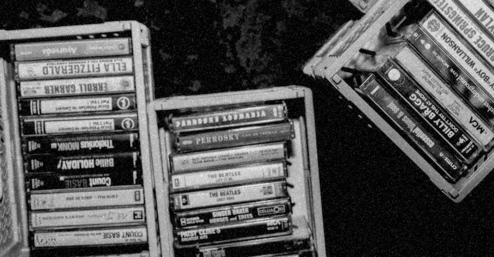

Demos: ¿por qué no?
Algo tienen los demos que siempre queremos reproducirlos con un estándar más alto pero sin perder esa esencia de algo que tienen y no sabemos qué es.
Munra busca el demo: sucio, a la primera, en cassette.

LADO A:
-
01
Prueba de cinta [demo]Un tono y un poco de hiss para probar el player. Se borra cuando llegue el primer demo de verdad.0:00 / -:--
LADO B:
-
—
Todavía en blanco.